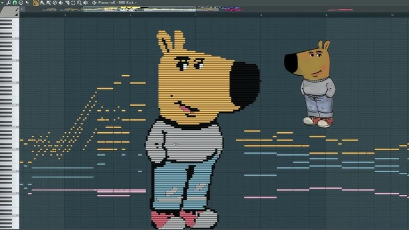

BOOK OF CHILLING - CHILLGUY
Introducing the Book of chilling: an experimental project poised to redefine political culture by amalgamating chilling memes, decentralized storage solutions, and trading in degen cryptocurrencies. This experiment endeavors to encapsulate the ever-evolving narrative surrounding Donald chilling within a digital compendium, the BOOK OF chilling, ensuring each piece is immortalized on the blockchain. The $BOCHI memecoin on Solana, Arweave, and IPFS as the primary storage of Book Of chilling and future expansions to Bitcoin inscriptions as immutable forever storage, this initiative aims to foster a new dimension of decentralized social media, and make chilling memes unstoppable.
Memecoin on the most Degen chain + This digital book is linked with metadata to the token and the Book has even more links to images stored on IPFS/ARWEAVE/ONCHAIN + A decentralized social network app + Tools to create chilling-themed memes + CC0 chilling Meme Clipart Collection - all of these here in one memecoin!
.png)
All unminted or unpublished chilling memes will be stored here in Book Of chilling
Total Supply: 69000000420 $BOCHI
- Community Fund (90%) - unlock in 3 months
- Liquidity Pools (30%)
- Presale (0%)
- TOKEN METADATA WILL BE MUTABLE SO I CAN UPDATE BOOK WITH NEW chilling MEMES AND IMAGES. SAME GAME LIKE DAILYSMOL OR LATESMOL updates, not every day, but with more dank content
Address to send $SOL HERE
No exact price; all the presale tokens will be allocated by % of contribution during 24h mint, and please do not dust the address or you could get nothing during airdrop
After the airdrop, I will create 1 or 2 liquidity pools with a higher starting price per $BOCHI so you can try to dump tokens fast lol.
*Disclaimer: I used DEX a lot and lost a lot, but still have no idea what I am doing*
Instructions during presale:
- Send $SOL from your personal wallet to get airdrop (NOT EXCHANGE)
- Will keep updating top list and $BOCHI current distribution on X hourly
- In 24h a final .csv will be published with all contributed funds; after that, please don't send funds. After presale and airdrop, I will try to set up pools and update DEX info ASAP, so refunds will take time.
Twitter: https://x.com/bochi_coin
telegram : https://t.me/+OdpscnLC97RlNDdk
Contract: HERE
